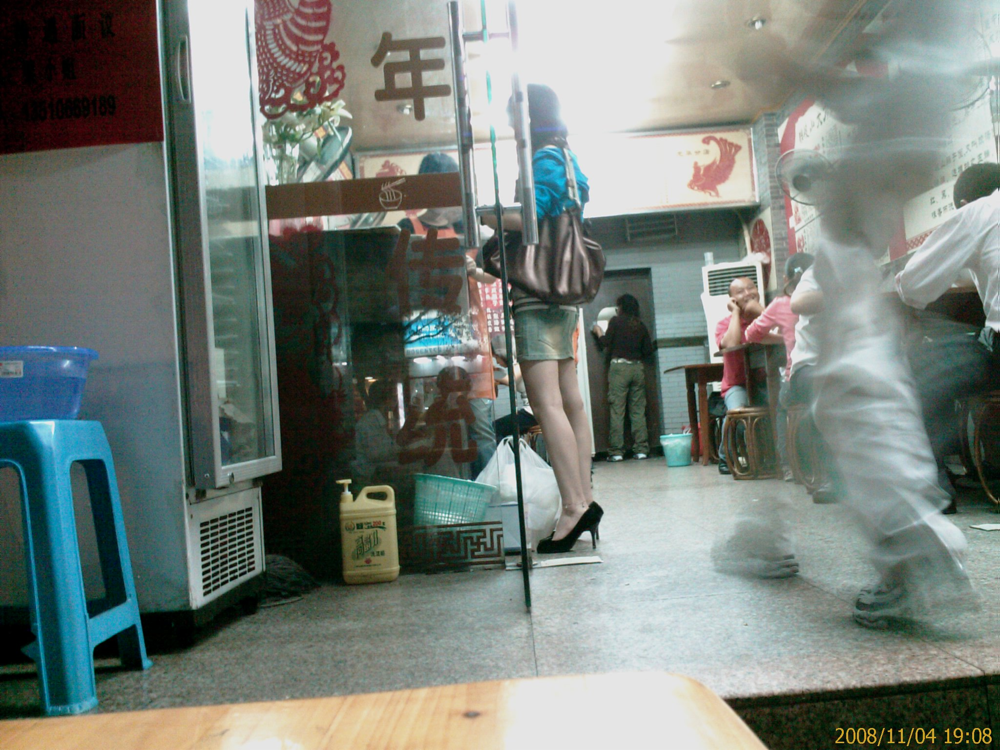
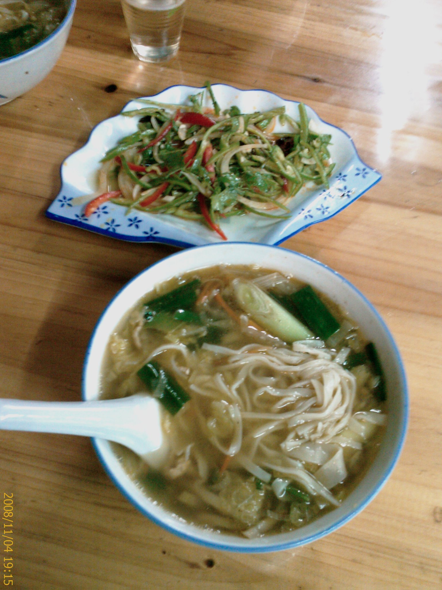
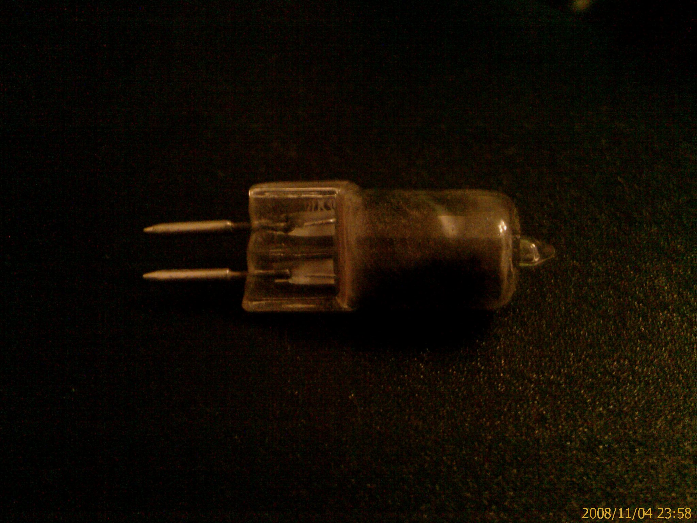

可惡的燈泡
4/Nov 2008
今天晚餐室友帶我去吃麵
聽說榨菜肉絲麵好吃
所以我們都是點榨菜肉絲麵
在等菜的時候
室友說裡面有個女生的腳蠻漂亮的
雖然我覺得到處都看的到
不過還是把她拍下來了…ccc

菜上桌了
下面的是榨菜肉絲麵
上面的是老虎菜

榨菜肉絲麵果然好吃
老虎菜有點辣
不過不會很辣
拿來開胃還不錯
而且還有湯可以配
吃飽後順便去買個燈泡
因為我的房間燈壞很久了
房東又不來修
就只好自力救濟了
買回去之後
一開始會亮
但是過沒一分鐘就燒掉了
我買的那個是 220V 的燈泡耶
理論上應該是燒不掉的啊
所以可能問題就出在燈座上了
關燈後要把燒掉的燈泡拿下來的時候
我覺得燈泡還蠻燙的
就用外套包著手去拆
沒想到剛碰到燈泡
外套就被融掉了
不知道那個溫度有多高
後來我看燈泡上的規格
姆指般大小的燈泡竟然高達 35W
真是恐怖…@_@

我還不死心
再去買燈泡來試其他的燈座看看
(四個燈壞了三個，所以還有兩個位置可以試)
買回來之後花了好大一番功夫才換上去
那個燈罩超礙事的
而且在換的時候又不敢開燈
搞了好一陣子才換上去
弄得我腰酸背痛
想去按摩一下了….
可惜時間不早了
就算了…T_T